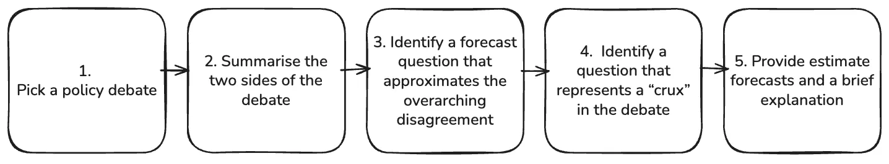
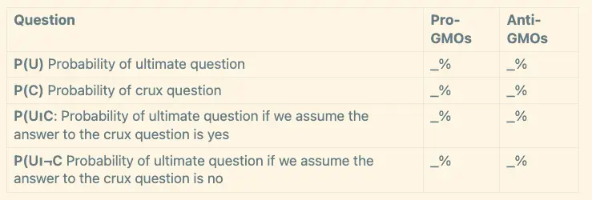
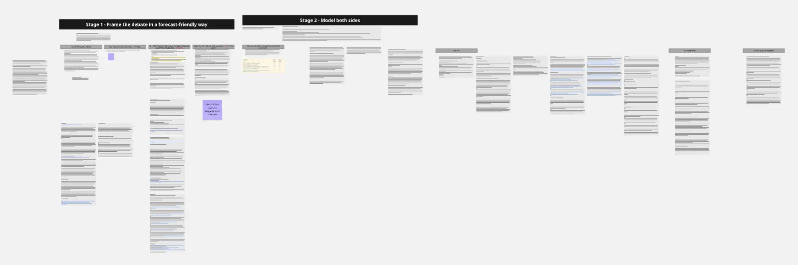
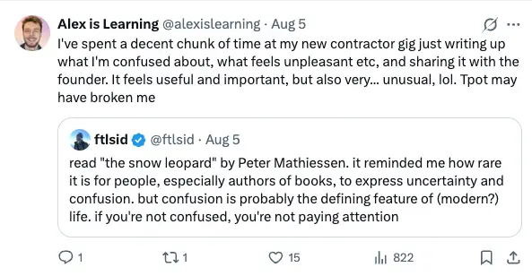

- FRI (Parent Page)
- 2025-08-06
- So, I’ve made it past the initial application stage and have now been invited to do a paid 5-10 hour work trial
- I’ve taken the day off from my contractor job to do it the work trial (or at least, a big chunk of it)
- But, I’m feeling aversion!
- Then I remembered this banger tweet
- So, here I am, to handle my feelings
- There are I’m sure very straightforward things leading to the aversion, that will resolve once brought to the light (or, will make a case for “don’t do the work trial”)
- So, the question is: should I do the work trial or not?

1. ✅ In favour of doing the work trial
Money and stability
- As of the 28th of July → “I am now making money!”
- However, this is via a contractor operations-y role for an early stage startup, so there’s no guarantees that I’ll get paid indefinitely, no stability
- I’m also still figuring out how I feel about the role
- So overall, it doesn’t feel like enough right now
- Also, I’m planning on moving to London soon, so it makes total sense to “income-stability-max”, so that I can pay rent etc without dipping into my (mostly depleted from 2 years of post-rat journey) savings
Potentially cool role
- I need to revisit it to see, but I remember convincing myself that it was worth applying to
- Of course, being a part time research assistant is very different from being a member of Philip Tetlock’s team. But it does get me closer to that world, which seems like it could be a good world to exist in
- Model of FRI & Why work for FRI & What actually is the FRI role?
2. ❌ Resistance to doing the work trial
- There’s initial resistance just because I don’t know what it is yet
- I imagine reading the instructions will make it feel less “daunting”
- Ok, I’ve now looked at the work trial instructions
I’ve never done anything like this before
- The work task looks hard

- It’s about identifying cruxes in policy debates
- I’ve used Fatebook.io for a few months so I’ve got experience in forecasting (in a very low stakes way), but I've never thought about policy etc
- It could be the kind of thing that I can do, because ultimately it’s just reasoning, being thorough etc, but my gut sense is “oh man, doing a brand new thing during a work trial does not bode well for my success”
- So, after reading the task document, my p(pass the work trial) has dropped
- It’s not like 0% chance I pass → maybe they’re not looking for experts here (I mean, it’s a part-time contractor role, not a full time employee position)
- But then again, maybe I’ll be competing with a bunch of LessWrongers/Metaculus users who do this kind of stuff all the time
- However, I do get paid either way
- $200, max of 10 hours of work
- That’s £15
- So, £15/hour pre-tax if I do the full 10 hours - pretty bad
- But, £30/hour pre-tax if I do 5 hours
- And get some experience in a new kind of work
- Maybe I’ll cap it at 5 hours of initial work today
3. Other thoughts
The work task seems like a great filter for “do I want this role”
- It could be the case that I suck at the work task, and I don’t get to the next stage, and I’m like “yeah fair enough, that kind of work is just not for me”
- Or it could be that I actually do fairly well and this unlocks a new avenue of work for me
- So it does feel like there’s good, positive, useful data to be gained from doing it (and it’s paid too)
- Like, maybe even if I suck at it, it’ll be like “I want to get better at this, I found doing this much more interesting than the type of work I usually do”
- Like, nothing to lose (apart from ~5-10 hours of time, and there’s the risk of a blow to the ol’ “I’m a smart guy” ego, lol)
- Nice, feels pretty resolved to me now. Clearly worth trying - no expectation, gut sense says this looks difficult and outside of my element, but why not give it a go, could unlock a new path
Maybe it’s in my wheelhouse?
Maybe I have the propensity for this stuff and don’t realise
- E.g., they said "You are one of the top applicants for the part-time Research Assistant position" in the email, so clearly I show promise, lol
- Overall, I think it’s true that my own intelligence/usefulness is relatively invisible to me. Like, I feel like I’m just some dumb guy, but I actually have lots of feedback that I’m e.g. really good at meta-cognition
- I could totally imagine my friends being like “dude this isn’t a big deal, you do this stuff all the time, just not about policy"
"Policy” sets off “I don’t know anything about this!” alarm bells
- I think I can hear “policy” and think like “oh god, that’s like, advanced shit, I didn’t do a political science degree” etc.
- Vs maybe it’s really not a big deal
- I think I can patiently do each step and not freak out
- Completionist urge of “wahhh I need to know about all the policies!” vs “I just need to choose one policy debate and zoom in on it and think in an iterative way”
- Also, a way to get smarter is to Destigmatise being dumb
Initial overwhelm vs “just patiently give it your best shot”
- I’ve been realising recently that I have a tendency towards overwhelm and like “omg this thing is so hard”/“it’s intractable”/“it’s beyond my skill level”
- Kinda “fixed mindset” shit
- Rather than “growth mindset” like “wahoo, sounds interesting, let’s give it a shot!”
- Writing up the below section and the 5 steps → none of this seems wildly beyond me.
- As I said, the mention of “policy debate” can trigger feelings of “I have spent 0 hours of my life looking into policy debates”, but the point of being a generalist researcher is that you just growth mindset-style read into stuff, think about stuff, etc. Which I guess I’m already doing in this doc!
How each step of the work trial feels
1. Pick a policy debate
“Feel free to select any topic; we recommend selecting a topic with which you’re already familiar.”
- This set off overwhelm alarm bells of like “eeee but I don’t know anything about any policy debates”
- But, I am a person who (like everyone), lived through COVID for example, so it seems like I can pick one that I’m aware of because it’s “in the water”, even if I have spent 0 minutes of my life thinking about the policy debate
- The application didn’t say "you must know lots about policy" - you just need to be able to reason, right?
2. Summarise the 2 sides of the debate
- This is the classic move of “steelmanning”
3. Identify a forecast question that approximates the overarching disagreement
- They provide pointers on how to do this
- Also this is the kind of stuff I do with friends, e.g. in Feb we were planning a group house and I wrote up a thing about my thinking and my key cruxes, key uncertainties etc
4. Identify a question that represents a “crux” in the debate
- I’m not 100% sure how 3 and 4 differ at this point, but I imagine it’s simple
5. Provide estimate forecasts and a brief explanation
- Again, they provide pointers on how to do this, and an example table
How it’s going (18:10)
- I’m ~4 hours in right now
- 1 hour step on “task 0” (that is, writing this doc)
- 3 hours working on the task
- A few pomodoros orienting to it, lots of talking to Gemini (and prompting it to be much less sycophantic)
- It’s painful. I’m really not great at handling uncertainty. I think with a bit of practice, I could be pretty good at this kind of work, but this is the first time I’ve ever done it, and it’s yeah, fairly painful
- The deadline is tomorrow - kinda wish I started it earlier. But also, good to have a strict looming deadline.
- It’s 18:10 now, I want to do another ~2-3 hours on it today, and 2-3 hours tomorrow, maybe
- It’s a great work trial because it’s teaching me how to do a new thing
- Doesn’t bode very well for me - the ideal work trial (at least w/r/t p(passing it)) has a feeling of “nice, I’ve done this task a bunch before, should be easy”
- But, even if I don’t pass, this is the most thorough “worldview modeling” I’ve ever done of other people, and I’m getting paid to do it
How it’s going now (19:15)
- It’s 19:15
- I’ve decided to pay for Miro again and port my thinking to there
- I’m finding that I’m trying to juggle an overwhelming amount of stuff in my working memory/in a corner of Obsidian, and it feels terrible.
- I think nested Obsidian pages can actually be a really bad move for stuff like this, I need to have a single Miro board where I can see everything and not feel overwhelmed. And also to be able to easy diagram
- I’ve tried using Excalidraw, because it’s free instead of ~£10/month, but I just really don’t like the vibe, idk. I could probably get over it with more use and save myself some money, but I know empirically how great Miro is for me, so… time to return
- I’ve just budgeted 2 pomodoros to port my thinking from Obsidian to Miro - feels like a pain, but I think it’ll be worth it for the clarity
- The sucky thing about Obsidian is you end up with all these nested pages with to-dos in them, vs in Miro you can just like use a bunch of purple post-its to denote to-dos, so it’s literally impossible to lose stuff
- I think this is a great task for teaching me to not be a completionist
- The point of forecasting is that you can’t know everything, you have to find proxies and etc
- I keep being hit with “oh god, to properly orient to this sub-task would take me hours, it’s impossible”! and then remembering “oh yeah that’s the point, you’re not supposed to be able to do that, you’re supposed to wisely interface with uncertainty”
- It could be a sign that this kind of work just is not for me because it constantly triggers me, or it could be a sign that it’s the ideal type of work for me because it forces me to confront some key failure modes that keep me in “overwhelm”/“I can’t start this project because it’ll be too complicated” mode
Realising that step 5 actually has many sub-steps
- Steps 1-4 are like “frame the debate”, and step 5 is “model both sides of the argument, come up with forecasts from their POV, including how much their forecasts would change if the crux came true”
- This is complex!!!!

Making a Miro board

- ☝️ quickly porting stuff from Obsidian to Miro → will organise it more, but it immediately feels great to see everything in one view. Like, this is everything, there’s no hidden nested doc somewhere
I’m allowed to do more than 10 hours
- It’s unlikely that I’ll hit >10 hours in 2 days (the deadline is tomorrow), but even if I got up to like 13+ hours, I think that’s fine, because I’ve spent a huge amount of time in meta confusion land, “how do I do a task like this”, rather than actually executing. There’s all this confusion and infrastructure stuff to figure out now, as someone who has never attempting to model the ~contingent beliefs & world models of opposing groups. This is hopefully the most confused I’ll be. It’s very educational!
Uncertainty is painful
-
Idk if the pain of this work trial is signal that this absolutely is not the type of work for me, or perhaps signal that it’s the perfect work for me
- E.g., to help counter 08. Enneagram 3 thinking sins
- And also I wrote this about How can I operate from a place of uncertainty?
-
It’s been a very humbling work trial → grappling with uncertainty, with an intellectual task that I’ve never quite attempted before (at least not at this scale), etc
-
Also:
-
